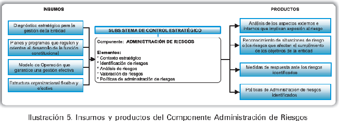

COMPONENTE ADMINISTRACIóN DEL RIESGO
Conjunto de Elementos de Control que al interrelacionarse, permiten a la Entidad Pública evaluar aquellos eventos negativos, tanto internos como externos, que puedan afectar o impedir el logro de sus objetivos institucionales o los eventos positivos, que permitan identificar oportunidades para un mejor cumplimiento de su función. Se constituye en el componente de control que al interactuar sus diferentes elementos le permite a la entidad pública autocontrolar aquellos eventos que pueden afectar el cumplimiento de sus objetivos.
El siguiente gráfico ilustra los insumos requeridos para el diseño de este Componente de Control, así como los productos que se obtienen de su operación. En algunos casos los productos serán tomados como insumos de otros componentes.
Este componente reconoce la presencia de la incertidumbre en todas las actividades organizacionales de una entidad, al tiempo que la habilita para identificar y administrar dicha incertidumbre.
Así mismo, faculta a la entidad para emprender las acciones necesarias que le permitan el manejo de los eventos que puedan afectar negativamente el logro de los objetivos institucionales. Es importante considerar que un evento puede representar una oportunidad para la organización pero si no se maneja adecuadamente y a tiempo, puede generar consecuencias negativas.
Este componente se estructura a través de los siguientes Elementos de Control:
1. Contexto Estratégico
Elemento de Control, que permite establecer el lineamiento estratégico que orienta las decisiones de la entidad pública, frente a los riesgos que pueden afectar el cumplimiento de sus objetivos producto de la observación, distinción y análisis del conjunto de circunstancias internas y externas que puedan generar eventos que originen oportunidades o afecten el cumplimiento de su función, misión y objetivos institucionales.
Definir el contexto estratégico contribuye al control de la entidad frente a la exposición al riesgo, ya que permite conocer las situaciones generadoras de riesgos, impidiendo con ello que la entidad actúe en dirección contraria a sus propósitos institucionales.
Una adecuada elaboración del contexto estratégico facilita la identificación de los riesgos y posibilita su análisis y valoración, al brindar información necesaria para estimar el grado de exposición a los mismos. De igual manera, permite orientar las políticas hacia el manejo de los riesgos relacionados con los aspectos más estratégicos de la entidad.
2. Identificación de Riesgos
Elemento de Control, que posibilita conocer los eventos potenciales, estén o no bajo el control de la Entidad Pública, que ponen en riesgo el logro de su Misión, estableciendo los agentes generadores, las causas y los efectos de su ocurrencia.
La identificación de riesgos se realiza tomando como referente el Componente de Direccionamiento Estratégico, para ello, se determinan los eventos generados en el entorno o dentro de la entidad que pueden afectar el logro de los objetivos.
Entender la importancia del manejo del riesgo implica conocer con más detalle los siguientes conceptos:
3. Análisis del Riesgo
Elemento de Control, que permite establecer la probabilidad de ocurrencia de los eventos positivos y/o negativos y el impacto de sus consecuencias, calificándolos y evaluándolos a fin de determinar la capacidad de la entidad pública para su aceptación y manejo.
Para adelantar el análisis del riesgo se deben considerar los siguientes aspectos:
La Calificación del Riesgo: se logra a través de la estimación de la probabilidad de su ocurrencia y el impacto que puede causar la materialización del riesgo. La primera representa el número de veces que el riesgo se ha presentado en un de-terminado tiempo o puede presentarse, y la segunda se refiere a la magnitud de sus efectos.
La Evaluación del Riesgo: permite comparar los resultados de su calificación, con los criterios definidos para establecer el grado de exposición de la entidad al riesgo; de esta forma es posible distinguir entre los riesgos aceptables, tolerables, moderados, importantes o inaceptables y fijar las prioridades de las acciones requeridas para su tratamiento.
4. Valoración del Riesgo
Elemento de Control, que determina el nivel o grado de exposición de la entidad pública al impacto del riesgo, permitiendo estimar las prioridades para su tratamiento.
La valoración del riesgo toma como base la calificación y evaluación de los riesgos, procediendo a la ponderación de riesgos del Modelo de Operación, con el objetivo de establecer prioridades para su manejo y fijación de políticas.
Establece a nivel estratégico de la entidad los mayores riesgos a los cuales está expuesta, permitiendo emprender acciones inmediatas de respuesta ante ellos a través del diseño de políticas y la aplicación de acciones tendientes a evitar, reducir, dispersar o transferir el riesgo; o asumir el riesgo residual, el cual se entiende como el nivel restante de riesgo después de que se han tomado medidas de manejo del mismo.
5. Políticas de Administración de Riesgos
Elemento de Control, que permite estructurar criterios orientadores en la toma de decisiones, respecto al tratamiento de los riesgos y sus efectos al interior de la entidad pública.
Transmiten la posición de la Dirección respecto al manejo de los riesgos y fijan lineamientos sobre los conceptos de calificación de riesgos, las prioridades en la respuesta, la forma de administrarlos y la protección de los recursos. En este sentido, establecen las guías de acción para que todos los servidores coordinen y administren los eventos que pueden inhibir el logro de los objetivos de la entidad, orientándolos y habilitándolos para ello.
Las Políticas identifican las opciones para tratar y manejar los riesgos con base en su valoración, y permiten tomar decisiones adecuadas para evitar, reducir, compartir o transferir, o asumir el riesgo.
Evitar el riesgo, tomar las medidas encaminadas a prevenir su materialización.
Reducir el riesgo, implica tomar medidas encaminadas a disminuir tanto la probabilidad (medidas de prevención), como el impacto (medidas de protección).
Compartir o Transferir el riesgo, reduce su efecto a través del traspaso de las pérdidas a otras organizaciones, como en el caso de los contratos de seguros o a través de otros medios que permiten distribuir una porción del riesgo con otra entidad, como en los contratos a riesgo compartido.
Asumir un riesgo, aceptar la pérdida residual probable y elaborar los planes de contingencia para su manejo.
Metodología
Dada la complementariedad e interrelación existente entre los elementos de control del Componente Administración del Riesgo, y con el propósito de garantizar una visión integral del mismo, a continuación se presenta una metodología general para su desarrollo sin abordar de manera particular cada uno de sus elementos. La metodología parte de una cadena de insumos y productos que al interrelacionarse da como resultado la formulación de la política de la Administración del Riesgo de la entidad.
Para la implementación de este Componente debe considerarse el Elemento Controles del Componente Actividades de Control del Subsistema de Control de Gestión con la finalidad de armonizar de manera integral y sistemática todos los eventos que hacen parte del Componente Administración del Riesgo.
El Componente se aborda siguiendo los lineamientos y conceptos formulados en la Guía Administración del Riesgo del Departamento Administrativo de la Función Pública, la cual puede consultar en la página web: www.dafp.gov.co
Finalmente, es importante resaltar que si bien la implementación del Componente es coordinada por el Representante de la Dirección y el Equipo MECI, debe ser abordada por los servidores de la entidad responsables del desarrollo de los diferentes procesos. Los pasos a seguir son: